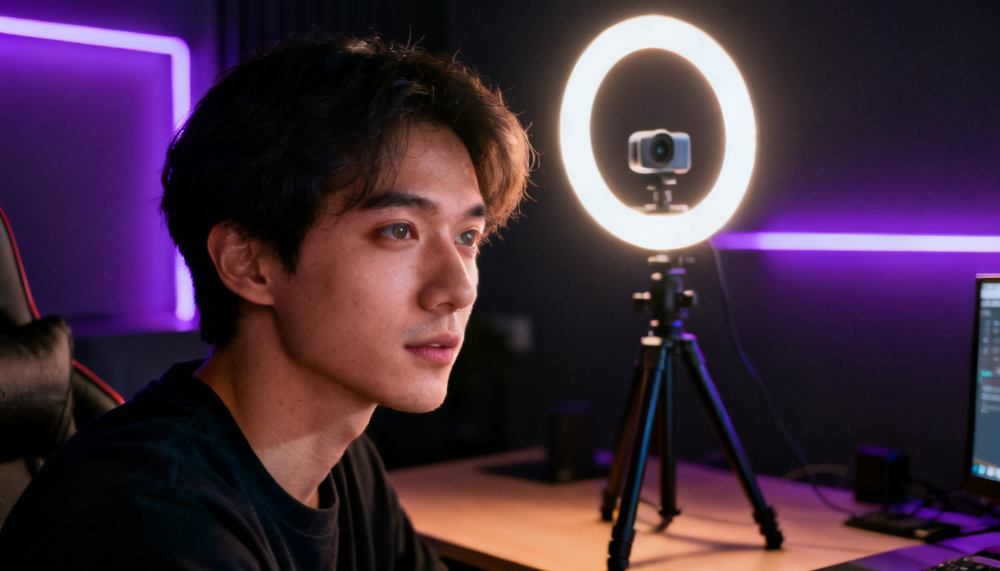
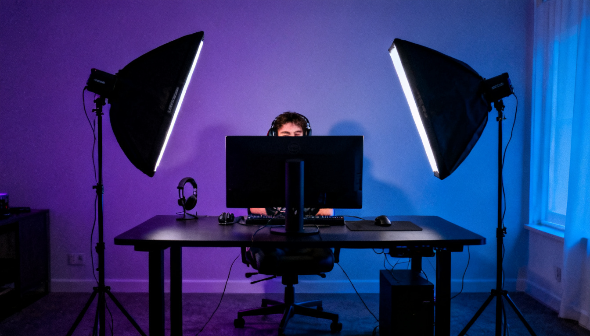
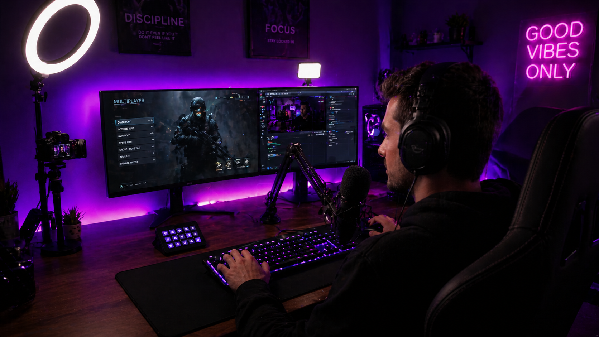

Хороший свет — половина успеха на стриме. Зрители хотят видеть чёткое, приятное глазу изображение ведущего. Но профессиональные студийные панели стоят дорого. К счастью, собрать рабочую схему освещения можно и с бюджетом до 3000 рублей. В этом гайде мы рассмотрим три проверенных варианта: от простейшего до почти профессионального.
📑 Содержание
Почему свет так важен для стримера?
Даже самая дорогая веб-камера не спасёт, если в комнате темно. Правильный свет решает сразу несколько задач:
- Улучшает качество картинки — меньше шумов, выше резкость.
- Скрывает недостатки кожи — мягкий рассеянный свет визуально сглаживает неровности.
- Создаёт атмосферу — цветной фон или акценты делают стрим уникальным.
- Выделяет вас на фоне — зритель сразу фокусируется на ведущем.
Схема 1: Один источник света
Кольцевая лампа или LED-панель от 1500 ₽
Самый простой и популярный вариант для начинающих. Кольцевая лампа диаметром 10-12 дюймов ставится прямо за веб-камерой или чуть выше монитора. Она даёт мягкий рассеянный свет, который равномерно освещает лицо и создаёт красивые блики в глазах.
Что купить:
- Кольцевая лампа со штативом и держателем для телефона/камеры — 1200-2000 ₽.
- По желанию — дополнительный рассеиватель (обычно идёт в комплекте).

Плюсы: дёшево, компактно, легко настроить. Минусы: может создавать тени на заднем плане, не подходит для сложных сцен.
Схема 2: Классический треугольник
Две LED-панели с софтбоксами от 2500 ₽
Профессиональная схема освещения, адаптированная под бюджет. Два источника света располагаются под углом 45 градусов слева и справа от лица, создавая объём и убирая тени. Третий, фоновый свет, можно добавить позже.
Что купить:
- Две LED-панели мощностью 20-30 Вт — около 2000 ₽ за пару.
- Два мини-софтбокса или рассеивателя — 500-800 ₽.
- Два бюджетных штатива — по 300-400 ₽ каждый.

Плюсы: отличное качество картинки, минимум теней. Минусы: занимает больше места, требует небольшой настройки.
Схема 3: RGB-акцент
Основной свет + цветная подсветка фона от 2800 ₽
Если хочется выделиться, добавьте к основному освещению RGB-подсветку на задний план. Это могут быть LED-ленты, недорогие RGB-лампы или даже обычные лампочки с Wi-Fi управлением.
Что купить:
- Основной источник: кольцевая лампа или LED-панель (1500-2000 ₽).
- RGB LED-лента 2-5 метров с USB-питанием — 300-600 ₽.
- Или Wi-Fi лампа — 1000-1500 ₽.

Плюсы: стильно, привлекает внимание. Минусы: требует дополнительной настройки цвета.
Сравнение трёх схем
| Схема | Бюджет | Качество света | Сложность | Рекомендация |
|---|---|---|---|---|
| Один источник (кольцевая лампа) | 1500-2000 ₽ | Хорошо | Очень легко | Новичкам |
| Треугольник (2 панели) | 2500-3500 ₽ | Отлично | Средне | Большинству стримеров |
| RGB-акцент (основной + фон) | 2800-4000 ₽ | Хорошо/Отлично | Средне | Творческим, игровым стримерам |
💡 Универсальный совет
Начните с кольцевой лампы. Когда почувствуете, что одного источника не хватает, докупите вторую панель и соберите треугольник. RGB-ленту можно добавить в любой момент — это недорогой способ обновить картинку.
Ещё несколько хитростей
- Используйте естественный свет — если стримите днём, поставьте стол напротив окна.
- Не ставьте свет слишком близко — оптимальное расстояние 50-80 см.
- Регулируйте цветовую температуру — для вечерних стримов выбирайте тёплый свет (3200-4500K).
- Фон тоже важен — повесьте однотонную ткань или используйте хромакей.
🎬 «Свет — это кисть, которой вы рисуете своё изображение. Освоив базовые схемы, вы сможете создавать любую атмосферу в кадре».